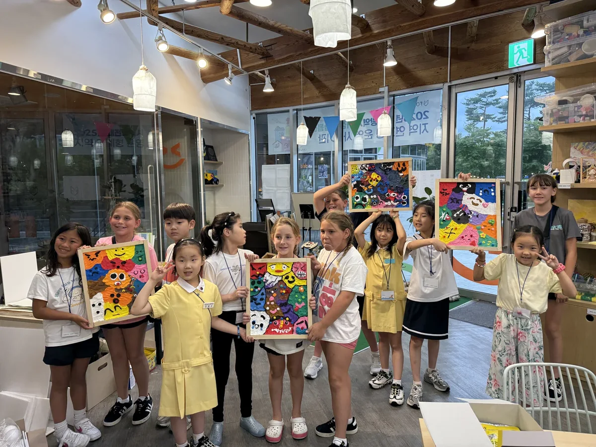

함께 놀고, 서로의 마음을 이해하기
2024년에는 부채 만들기와 태권도, 한국·미국 놀이를 함께했습니다.
표정과 몸짓으로 감정을 알아보고 자신의 경험도 나눴습니다.
자신의 마음을 전하고 친구가 표현하는 생각과 감정을 알아가는 활동입니다.
감정 나눠보기
어떤 일이 있었나요?
서로의 이야기를 듣고, 내 마음도 표현해보세요.
캠프에서는 이렇게 표현했어요
감정을 클레이 얼굴로 표현하기
2025년 한국 교류 캠프에서는 한국·미국 학생들이 여러 감정을 클레이 얼굴로 표현했습니다.
다양한 감정을 알아보고 자신과 친구의 감정을 존중하는 연습을 위한 활동입니다.
